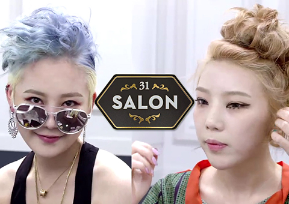
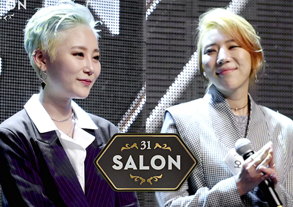
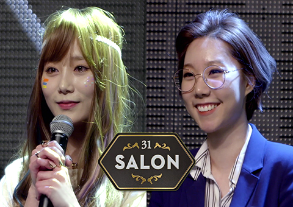

Episode
뷰티 서바이벌 TOP3

미스터리 박스 인 더 살롱!
세번째 미션! 도전자들 앞에 놓여진 의문의 미스터리 박스. 박스 안의 제품만을 사용하여 스타일링을 완성하라! 멘붕 상태의 31살롱, 급기야 눈물을 보이는 도전자들.. 보다 치열해진 세번째 미션의 생존자는 누가 될 것인가!

31살롱의 ＇주인＇은 누구?
최종 합격자가 가려지는 마지막 미션. 마지막인 만큼 도전자의 모든 것을 보여주어야 한다. 민경과 오마디 중 과연 최후에 웃게 될 첫 번째 31살롱의 ‘주인’은 누가 될 것인가?

‘두 얼굴’ 의 그녀들 31살롱!
‘두 얼굴의 야누스’ 두 번째 미션을 위해 31살롱에 미쟝센 팬트리가 등장한다. 첫 번째 미션과 전혀 다른 모습을 보여야 하는 참가자들이 어떤 스타일링을 보여줄 지 기대된다.